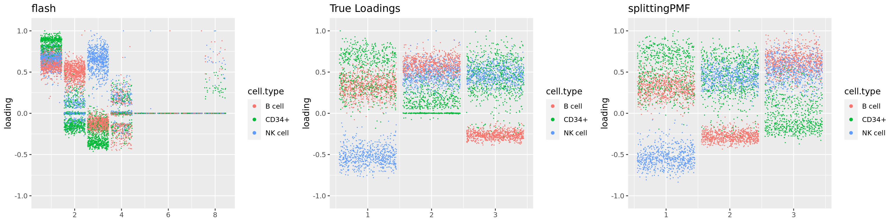
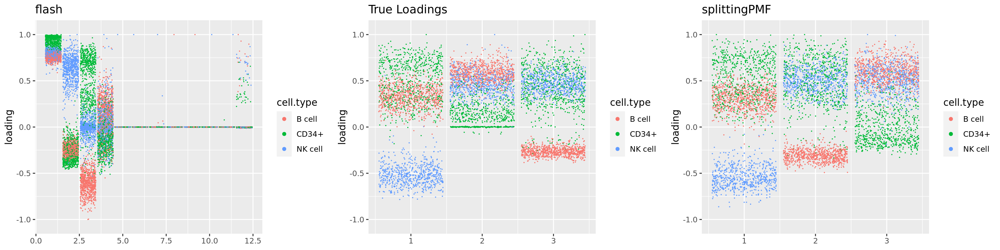
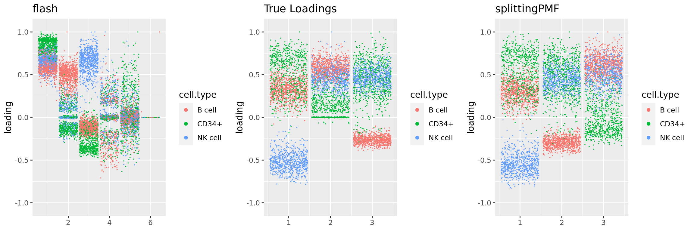
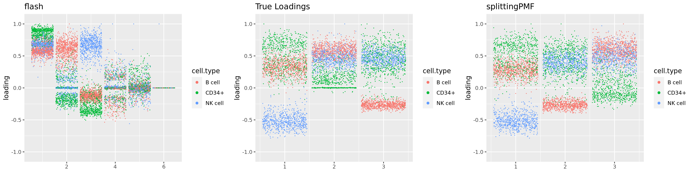
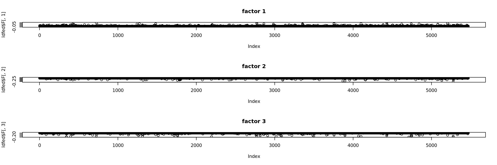
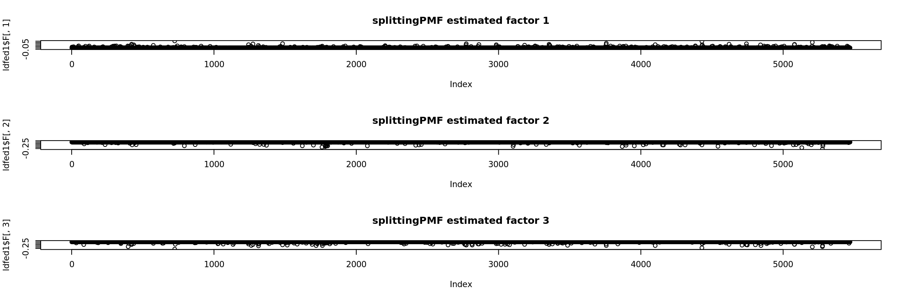
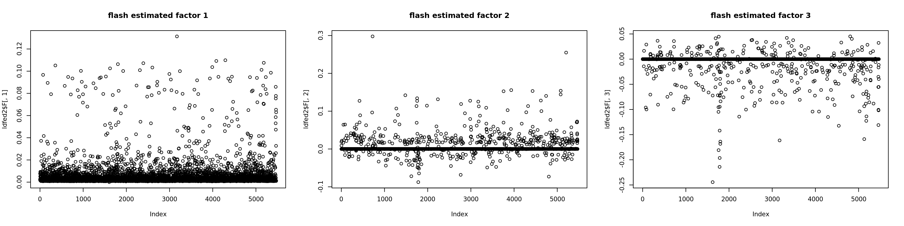
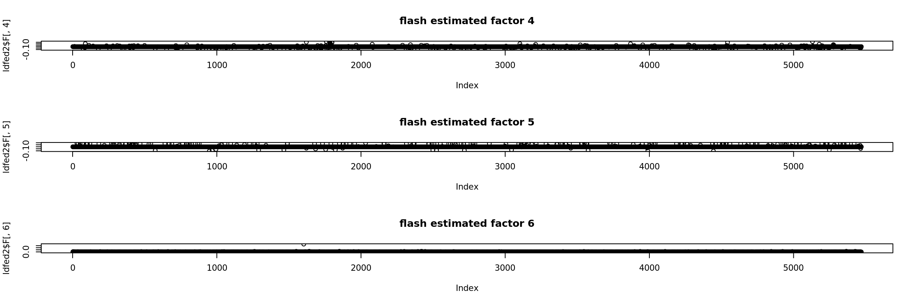

Simulation based on pbmc 3 cell types
DongyueXie
2022-12-09
Last updated: 2022-12-09
Checks: 7 0
Knit directory: gsmash/
This reproducible R Markdown analysis was created with workflowr (version 1.7.0). The Checks tab describes the reproducibility checks that were applied when the results were created. The Past versions tab lists the development history.
Great! Since the R Markdown file has been committed to the Git repository, you know the exact version of the code that produced these results.
Great job! The global environment was empty. Objects defined in the global environment can affect the analysis in your R Markdown file in unknown ways. For reproduciblity it’s best to always run the code in an empty environment.
The command set.seed(20220606) was run prior to running
the code in the R Markdown file. Setting a seed ensures that any results
that rely on randomness, e.g. subsampling or permutations, are
reproducible.
Great job! Recording the operating system, R version, and package versions is critical for reproducibility.
Nice! There were no cached chunks for this analysis, so you can be confident that you successfully produced the results during this run.
Great job! Using relative paths to the files within your workflowr project makes it easier to run your code on other machines.
Great! You are using Git for version control. Tracking code development and connecting the code version to the results is critical for reproducibility.
The results in this page were generated with repository version b705a7f. See the Past versions tab to see a history of the changes made to the R Markdown and HTML files.
Note that you need to be careful to ensure that all relevant files for
the analysis have been committed to Git prior to generating the results
(you can use wflow_publish or
wflow_git_commit). workflowr only checks the R Markdown
file, but you know if there are other scripts or data files that it
depends on. Below is the status of the Git repository when the results
were generated:
Ignored files:
Ignored: .Rhistory
Ignored: .Rproj.user/
Ignored: data/poisson_mean_simulation/
Untracked files:
Untracked: Rplot.png
Untracked: data/real_data_singlecell/
Untracked: figure/
Untracked: output/poisson_MF_simulation/
Untracked: output/poisson_mean_simulation/
Untracked: output/poisson_smooth_simulation/
Unstaged changes:
Modified: analysis/index.Rmd
Modified: analysis/run_PMF_on_pbmc.Rmd
Modified: code/poisson_STM/real_PMF.R
Note that any generated files, e.g. HTML, png, CSS, etc., are not included in this status report because it is ok for generated content to have uncommitted changes.
These are the previous versions of the repository in which changes were
made to the R Markdown
(analysis/simulation_based_on_pbmc_3cell.Rmd) and HTML
(docs/simulation_based_on_pbmc_3cell.html) files. If you’ve
configured a remote Git repository (see ?wflow_git_remote),
click on the hyperlinks in the table below to view the files as they
were in that past version.
| File | Version | Author | Date | Message |
|---|---|---|---|---|
| Rmd | b705a7f | DongyueXie | 2022-12-09 | wflow_publish("analysis/simulation_based_on_pbmc_3cell.Rmd") |
| html | 77790dd | DongyueXie | 2022-12-09 | Build site. |
| Rmd | 611a6ee | DongyueXie | 2022-12-09 | wflow_publish("analysis/simulation_based_on_pbmc_3cell.Rmd") |
Setting
This is a simulation comparing splitting PMF and flash on factorizing Poisson matrix.
To make the simulated dataset close to a real single cell data, I
fitted a splitting PMF on a PBMC single cell data from
fastTopics package. I took cells from cell types in ‘B
cell’, ‘NK cell’,‘CD34+’ and then filtered out genes that has no
expression in more than \(3\%\) percent
of the cells. The two steps are mainly for reducing the dataset size.
The resulting dataset has 2127 cells and 5470 genes.
Then I fitted splitting PMF on the dataset, with the scaling factors
being \(s_{ij} =
\frac{y_{i+}y_{+j}}{y_{++}}\) and gene-specific variances. Then I
generated data from the fitted model, and repeated 5 times. When
simulating data, I took the first three topics(with PVE 0.24,0.20,0.17)
and discarded the rests. The flash was fit on transformed
count data, as \(\tilde{y}_{ij} =
\log(1+\frac{y_{ij}}{s_{ij}}\frac{a_j}{0.5})\) where \(a_j = median(s_{\cdot j})\). This
transformation is derived from \(\tilde{y}_{ij} =
\log(\frac{y_{ij}}{s_{ij}}+\frac{0.5}{a_j})\).
rmse = function(x,y){return(sqrt(mean((x-y)^2)))}
res = readRDS('output/poisson_MF_simulation/PMF5_K3simu_pbmc_3cells.rds')We first look at the number factors recovered from both methods. The true \(K\) is 3.
K_hat = c()
for(i in 1:length(res$output)){
K_hat = rbind(K_hat,c(res$output[[i]]$fitted_model$flash$n.factors,res$output[[i]]$fitted_model$splitting$fit_flash$n.factors))
}
colnames(K_hat) = c('flash','splittingPMF')
K_hat flash splittingPMF
[1,] 8 3
[2,] 12 3
[3,] 6 3
[4,] 7 3
[5,] 6 3Next we compare \(\hat L\hat F'\) and true \(LF'\).
fit = readRDS('output/poisson_MF_simulation/pbmc_3cells_Sij.rds')
kset = order(fit$fit$fit_flash$pve,decreasing = TRUE)[1:3]
Ltrue = fit$fit$fit_flash$L.pm[,kset]
Ftrue = fit$fit$fit_flash$F.pm[,kset]
Mu_true = tcrossprod(Ltrue,Ftrue)rmses= c()
for(i in 1:length(res$output)){
rmses = rbind(rmses,c(rmse(Mu_true,fitted(res$output[[i]]$fitted_model$flash)),rmse(Mu_true,fitted(res$output[[i]]$fitted_model$splitting$fit_flash))))
}
colnames(rmses) = c('flash','splittingPMF')
rmses flash splittingPMF
[1,] 0.5819739 0.1881947
[2,] 0.5819058 0.1854424
[3,] 0.5815135 0.1853517
[4,] 0.5817050 0.1877322
[5,] 0.5823862 0.1827952par(mfrow=c(2,1))
for(i in 1:length(res$output)){
plot(fitted(res$output[[i]]$fitted_model$flash),Mu_true,col='grey80',xlab='fitted',ylab='LF',main='flash')
abline(a=0,b=1)
plot(fitted(res$output[[i]]$fitted_model$splitting$fit_flash),Mu_true,col='grey80',xlab='fitted',ylab='LF',main='splitting')
abline(a=0,b=1)
}
par(mfrow=c(1,1))Next we look at how the structures of L and F are recovered by both methods.
We first plot loadings.
library(fastTopics)
library(Matrix)
library(stm)
Attaching package: 'stm'The following object is masked from 'package:fastTopics':
poisson2multinomrequire(gridExtra)Loading required package: gridExtradata(pbmc_facs)
counts <- pbmc_facs$counts
table(pbmc_facs$samples$subpop)
B cell CD14+ CD34+ NK cell T cell
767 163 687 673 1484 ## use only B cell and NK cell and CD34+
cells = pbmc_facs$samples$subpop%in%c('B cell', 'NK cell','CD34+')
counts = counts[cells,]
# filter out genes that has few expressions(3% cells)
genes = (colSums(counts>0) > 0.03*dim(counts)[1])
cell_names = pbmc_facs$samples$subpop[cells]
source('code/poisson_STM/plot_factors.R')plot0=plot.factors(fit$fit$fit_flash,cell.types=cell_names,kset=kset,title='True Loadings')
for(i in 1:length(res$output)){
plot1 = plot.factors(res$output[[i]]$fitted_model$flash,cell.types=cell_names,title='flash')
plot2 = plot.factors(res$output[[i]]$fitted_model$splitting$fit_flash,cell.types=cell_names,title='splittingPMF')
grid.arrange(plot1, plot0,plot2, ncol=3)
}
| Version | Author | Date |
|---|---|---|
| 77790dd | DongyueXie | 2022-12-09 |

| Version | Author | Date |
|---|---|---|
| 77790dd | DongyueXie | 2022-12-09 |

| Version | Author | Date |
|---|---|---|
| 77790dd | DongyueXie | 2022-12-09 |

| Version | Author | Date |
|---|---|---|
| 77790dd | DongyueXie | 2022-12-09 |

| Version | Author | Date |
|---|---|---|
| 77790dd | DongyueXie | 2022-12-09 |
Plot of factors: the first simulation
library(flashier)Loading required package: magrittrpar(mfrow=c(1,3))
ldfed = ldf(fit$fit$fit_flash)
plot(ldfed$F[,1],main='factor 1')
plot(ldfed$F[,2],main='factor 2')
plot(ldfed$F[,3],main='factor 3')
| Version | Author | Date |
|---|---|---|
| 77790dd | DongyueXie | 2022-12-09 |
par(mfrow=c(1,3))
ldfed1 = ldf(res$output[[1]]$fitted_model$splitting$fit_flash)
plot(ldfed1$F[,1],main='splittingPMF estimated factor 1')
plot(ldfed1$F[,2],main='splittingPMF estimated factor 2')
plot(ldfed1$F[,3],main='splittingPMF estimated factor 3')
| Version | Author | Date |
|---|---|---|
| 77790dd | DongyueXie | 2022-12-09 |
par(mfrow=c(1,3))
ldfed2 = ldf(res$output[[1]]$fitted_model$flash)
plot(ldfed2$F[,1],main='flash estimated factor 1')
plot(ldfed2$F[,2],main='flash estimated factor 2')
plot(ldfed2$F[,3],main='flash estimated factor 3')
| Version | Author | Date |
|---|---|---|
| 77790dd | DongyueXie | 2022-12-09 |
plot(ldfed2$F[,4],main='flash estimated factor 4')
plot(ldfed2$F[,5],main='flash estimated factor 5')
plot(ldfed2$F[,6],main='flash estimated factor 6')
| Version | Author | Date |
|---|---|---|
| 77790dd | DongyueXie | 2022-12-09 |
sessionInfo()R version 4.2.1 (2022-06-23)
Platform: x86_64-pc-linux-gnu (64-bit)
Running under: Ubuntu 20.04.5 LTS
Matrix products: default
BLAS: /usr/lib/x86_64-linux-gnu/blas/libblas.so.3.9.0
LAPACK: /usr/lib/x86_64-linux-gnu/lapack/liblapack.so.3.9.0
locale:
[1] LC_CTYPE=C.UTF-8 LC_NUMERIC=C LC_TIME=C.UTF-8
[4] LC_COLLATE=C.UTF-8 LC_MONETARY=C.UTF-8 LC_MESSAGES=C.UTF-8
[7] LC_PAPER=C.UTF-8 LC_NAME=C LC_ADDRESS=C
[10] LC_TELEPHONE=C LC_MEASUREMENT=C.UTF-8 LC_IDENTIFICATION=C
attached base packages:
[1] stats graphics grDevices utils datasets methods base
other attached packages:
[1] flashier_0.2.34 magrittr_2.0.3 ggplot2_3.3.6 gridExtra_2.3
[5] stm_1.1.0 Matrix_1.5-1 fastTopics_0.6-142 workflowr_1.7.0
loaded via a namespace (and not attached):
[1] mcmc_0.9-7 bitops_1.0-7 matrixStats_0.62.0
[4] fs_1.5.2 progress_1.2.2 httr_1.4.4
[7] rprojroot_2.0.3 tools_4.2.1 bslib_0.4.0
[10] utf8_1.2.2 R6_2.5.1 irlba_2.3.5.1
[13] uwot_0.1.14 DBI_1.1.3 lazyeval_0.2.2
[16] colorspace_2.0-3 withr_2.5.0 wavethresh_4.7.2
[19] prettyunits_1.1.1 tidyselect_1.2.0 processx_3.7.0
[22] ebpm_0.0.1.3 compiler_4.2.1 git2r_0.30.1
[25] cli_3.4.1 quantreg_5.94 SparseM_1.81
[28] plotly_4.10.1 labeling_0.4.2 horseshoe_0.2.0
[31] sass_0.4.2 caTools_1.18.2 scales_1.2.1
[34] SQUAREM_2021.1 quadprog_1.5-8 callr_3.7.2
[37] pbapply_1.6-0 mixsqp_0.3-48 stringr_1.4.1
[40] digest_0.6.29 rmarkdown_2.17 MCMCpack_1.6-3
[43] deconvolveR_1.2-1 vebpm_0.3.3 pkgconfig_2.0.3
[46] htmltools_0.5.3 highr_0.9 fastmap_1.1.0
[49] invgamma_1.1 htmlwidgets_1.5.4 rlang_1.0.6
[52] rstudioapi_0.14 farver_2.1.1 jquerylib_0.1.4
[55] generics_0.1.3 jsonlite_1.8.2 dplyr_1.0.10
[58] smashr_1.3-6 Rcpp_1.0.9 munsell_0.5.0
[61] fansi_1.0.3 lifecycle_1.0.3 stringi_1.7.8
[64] whisker_0.4 yaml_2.3.5 nleqslv_3.3.3
[67] rootSolve_1.8.2.3 MASS_7.3-58 plyr_1.8.7
[70] Rtsne_0.16 grid_4.2.1 parallel_4.2.1
[73] promises_1.2.0.1 ggrepel_0.9.2 crayon_1.5.2
[76] lattice_0.20-45 cowplot_1.1.1 splines_4.2.1
[79] hms_1.1.2 knitr_1.40 ps_1.7.1
[82] pillar_1.8.1 softImpute_1.4-1 reshape2_1.4.4
[85] glue_1.6.2 evaluate_0.17 trust_0.1-8
[88] getPass_0.2-2 data.table_1.14.6 RcppParallel_5.1.5
[91] nloptr_2.0.3 vctrs_0.4.2 httpuv_1.6.6
[94] MatrixModels_0.5-1 gtable_0.3.1 purrr_0.3.5
[97] ebnm_1.0-9 tidyr_1.2.1 assertthat_0.2.1
[100] ashr_2.2-54 cachem_1.0.6 xfun_0.33
[103] NNLM_0.4.4 coda_0.19-4 later_1.3.0
[106] survival_3.4-0 viridisLite_0.4.1 truncnorm_1.0-8
[109] tibble_3.1.8 ellipsis_0.3.2